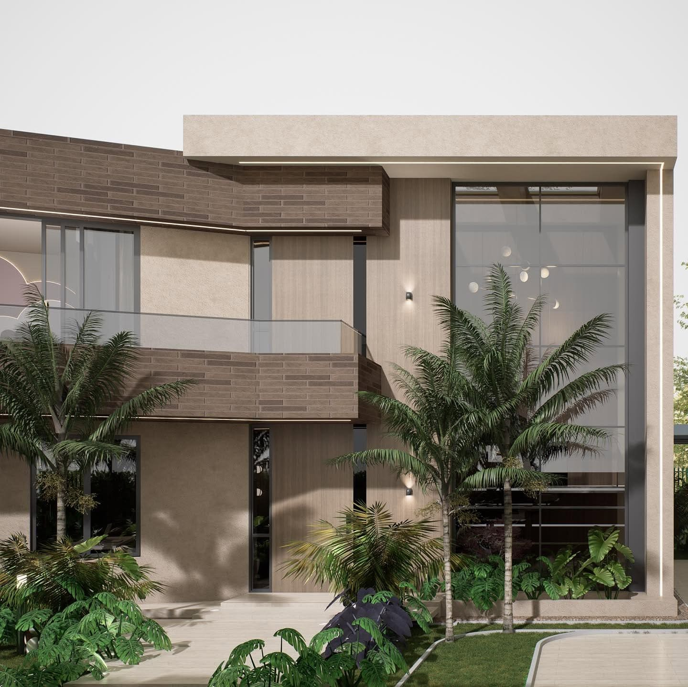
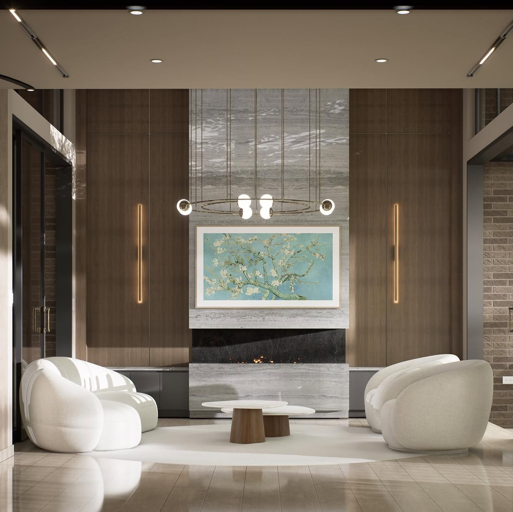
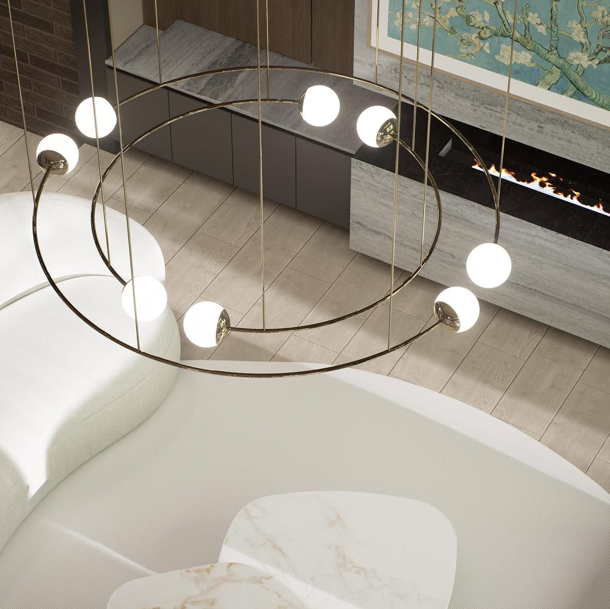
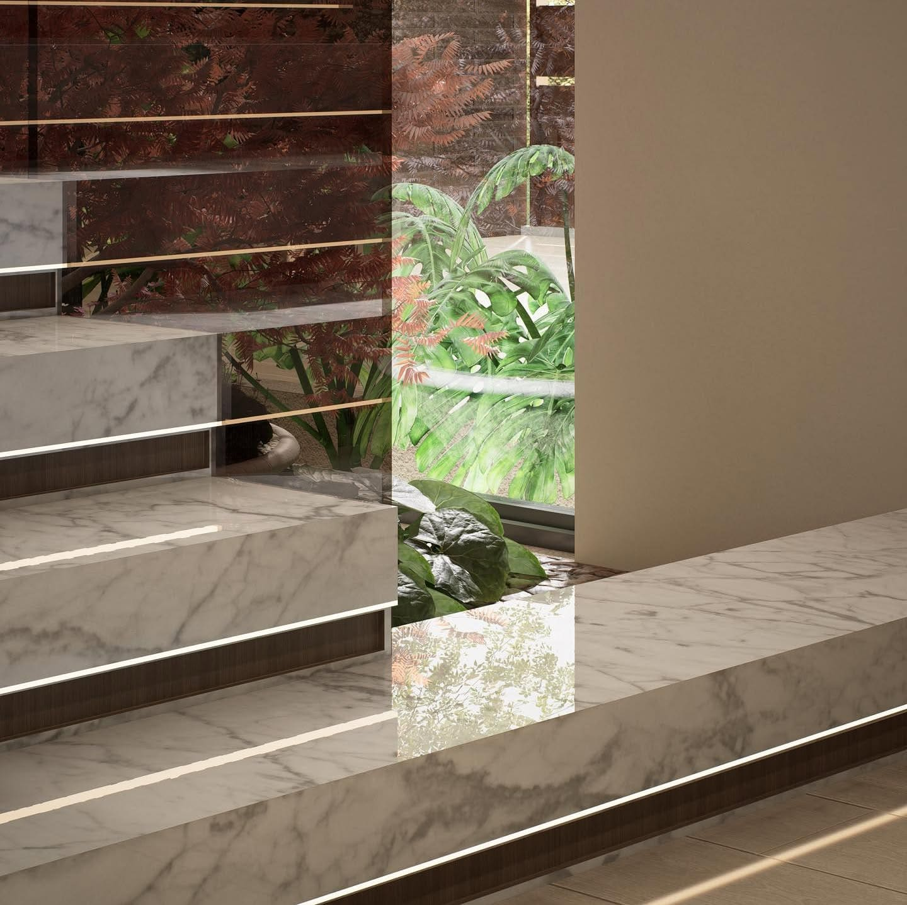
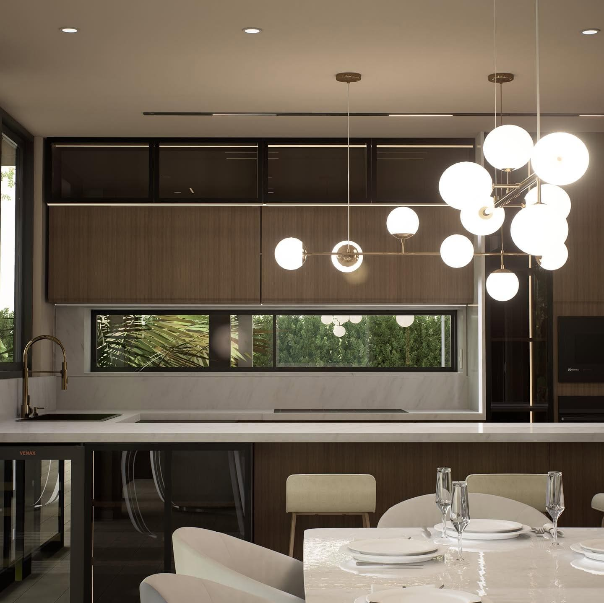

A · La fachada
Carácter y proporción.
La fachada habla de carácter y proporción: un volumen que vuela sobre el acceso y un ventanal de doble altura abierto al jardín.

Proyectos / Tocarinda
Un hogar contemporáneo en medio de la sabana de Bogotá.
01 — El proyecto
Con 202,39 m² de diseño pensado al detalle, esta vivienda celebra la majestuosidad del espacio sin perder la calidez del hogar.
02 — Recorrido

A · La fachada
La fachada habla de carácter y proporción: un volumen que vuela sobre el acceso y un ventanal de doble altura abierto al jardín.
B · El recibidor
Al cruzar el umbral, el recibidor envuelve con su espejo de gran formato y prepara el recorrido hacia la doble altura de la sala.


C · La doble altura
En la sala, una chimenea en mármol se convierte en el punto focal del diseño, bajo una lámpara anular que marca el centro del espacio.

D · El detalle
Las escaleras de mármol retroiluminadas conducen hacia nuevas perspectivas.

E · Cocina, comedor y terraza
La cocina y el comedor se integran con el exterior para crear momentos memorables entre familia y amigos, hasta la terraza cubierta con su fogatero.
03 — Galería · 8 imágenes
Un proyecto donde cada rincón refleja elegancia, funcionalidad y emoción.
 Siguiente proyecto · 03
Casa Imperium
Ver todos los proyectos →
Siguiente proyecto · 03
Casa Imperium
Ver todos los proyectos →
Agenda tu cita